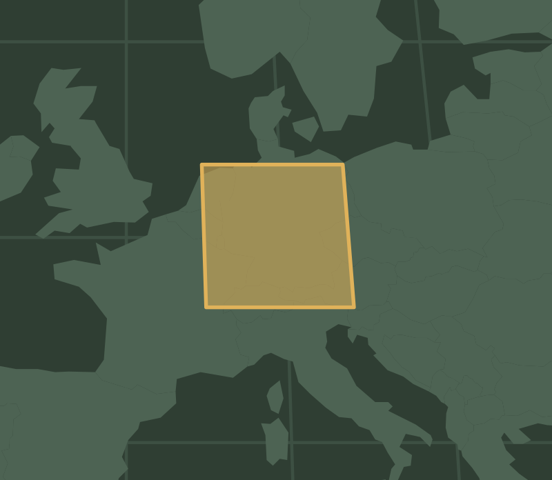

Molécula · Psicoactivo
MDMA
3,4-metilendioximetanfetamina
La MDMA es una fenetilamina sintética creada por Merck en 1912 y redescubierta en 1976 por Alexander Shulgin. Produce efectos prosociales de confianza y autocompasión con lucidez cognitiva. Se ha estudiado en terapia asistida para el TEPT, y en 2024 la FDA rechazó la solicitud inicial y pidió otro ensayo de fase 3.1234
También se llamaéxtasis · MDMA · molly (apodos) · entactógeno
- Qué es
- Entactógeno sintético
- Territorio
- Origen de laboratorio, Alemania y Estados Unidos
- Fuente
- Síntesis farmacéutica
- Mecanismo
- Libera serotonina; efecto prosocial
- Empieza y dura
- Varias horas
- Quién guarda su memoria
- Shulgin, MAPS y terapeutas
La sustancia
Una molécula que esperó medio siglo
Se sintetizó y patentó en 1912 en Merck, como intermediario para fabricar un compuesto que frenara hemorragias.238
Merck la estudió en animales en 1927, de nuevo en 1952 y 1959, y decidió no investigarla en humanos.7
Hay versiones divergentes sobre el propósito original, entre anticoagulante y supresor del apetito, según la fuente.36
Ficha descriptiva: sin dosis ni síntesis.
- Clase
- Fenetilamina entactógena
- Año
- 1912
- Redescubrimiento
- 1976
- Estatus clínico
- En revisión
Memoria e historia
De Merck a Shulgin y a la clínica
Alexander Shulgin la redescubrió en 1976 y comenzó sus autoexperimentos; fue él quien la introdujo en la psicoterapia.256
Hacia 1976 había dado MDMA a cientos de psicólogos en Estados Unidos.9
En 1978 Shulgin y Nichols describieron un estado alterado de conciencia controlable, con tonos emocionales y sensuales.5
Tras las audiencias, un juez recomendó en 1986 situarla en la lista III, por considerar que tenía uso médico aceptado.5
En 1996 MAPS completó el primer estudio de seguridad de fase 1 en terapia asistida.9
En el tiempo
Síntesis en Merck
Redescubrimiento por Shulgin
Designada terapia innovadora por la FDA
La FDA pide otro ensayo de fase 3
Sus nombres
Contexto y cuidado
Origen y contexto

Qué ayuda
- Informarse en fuentes fiables.
- Distinguir investigación, experiencia y uso regulado.
- Respetar los marcos legales y clínicos.
Química y mecanismo
Serotonina y prosocialidad
A diferencia de otros psicodélicos, induce efectos prosociales de confianza y autocompasión, sin perder la funcionalidad del yo ni la lucidez perceptiva.1
Se citan tamaños de efecto grandes en TEPT (d de Cohen entre 1,95 y 2,10).1
La FDA designó la terapia asistida «Breakthrough Therapy» en 2017.1
La experiencia
Lo que se describe
Se describe un aumento de empatía, apertura y emoción.6
Genera confianza y autocompasión con lucidez.1
Esquema orientativo: cambia con la preparación, la cantidad y la persona.
Investigación
Qué se ha estudiado
Los estudios de fase 2 y 3 publicados con control de placebo han sido patrocinados por MAPS.2
Un acceso ampliado empezó en 2022 en entornos regulados por la FDA, aunque la FDA denegó la solicitud inicial en 2024.1
En 2006 se patrocinó un segundo estudio de fase 2 en Suiza, a cargo de Peter Oehen.3
Alcance de estos datosEnsayos de fase 3 completados en TEPT; aprobación regulatoria pendiente.
Con cuidado
Lo que conviene saber antes
Hay controversia sobre los ensayos y la regulación.
Requiere evaluación médica previa en cualquier entorno clínico.
La terapia asistida requiere equipo formado y marco clínico.
Para seguir
Libros y medicinas emparentadas
Otra sustancia en psiquiatría.
Molécula2C-BFenetilaminaMezcla histórica «Nexus flip».
Parientes químicos lejanos.
Fuentes
De dónde sale cada dato
- Psychiatry Online. MDMA-assisted therapy. psychiatryonline.org/doi/10.1176/appi.ajp.20230681.
- Protocolo clínico, MDMA y TEPT en militares. cdn.clinicaltrials.gov/large-docs/62/NCT07704762/Prot_000.pdf.
- MAPS. Towards Breakthrough Healing (Bulletin 2017). maps.org/news/bulletin/towards-breakthrough-healing-a-history-and-overview-of-clinical-mdma-research-3/.
- Springer Nature Communities. Treating PTSD with MDMA-assisted therapy. communities.springernature.com/posts/treating-ptsd-with-mdma-assisted-therapy-a-long-time-in-coming.
- MIND Foundation. A History of Ecstasy Science. mind-foundation.org/?p=1625.
- O'Brien, S. MDMA-assisted therapy: challenges, clinical trials, and the future. Cambridge Core. cambridge.org/core/product/6CDEA4B298F1958CEAEEEA384B0145D1/core-reader.
- MAPS. Williams, E. Towards Breakthrough Healing. maps.org/news/bulletin/articles/420-bulletin-spring-2017/6618-towards-breakthrough-healing-a-history-and-overview-of-clinical-mdma-research-3.
- STAT News. MDMA, FDA y Lykos. statnews.com/2024/08/09/mdma-ptsd-fda-lykos-psychedelics-need-to-know/.
- Benzinga. A Brief History Of MDMA. benzinga.com/z/27404938.
- Mapa APDER, con datos de Natural Earth · dominio público
- Dibujos de moléculas APDER
Última revisión: 24 de noviembre de 2026. Si ves un error, escríbenos a info@apder.org.